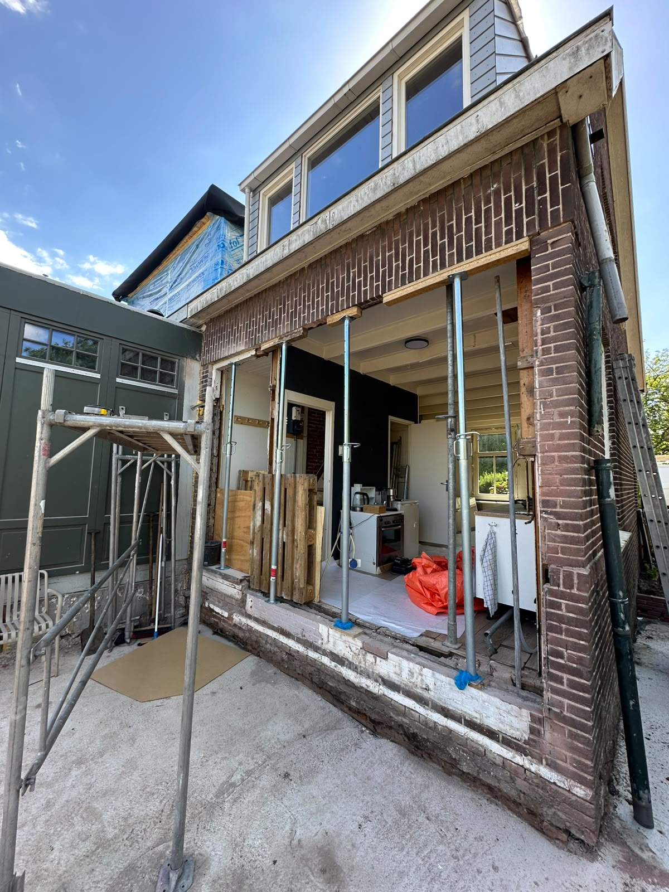
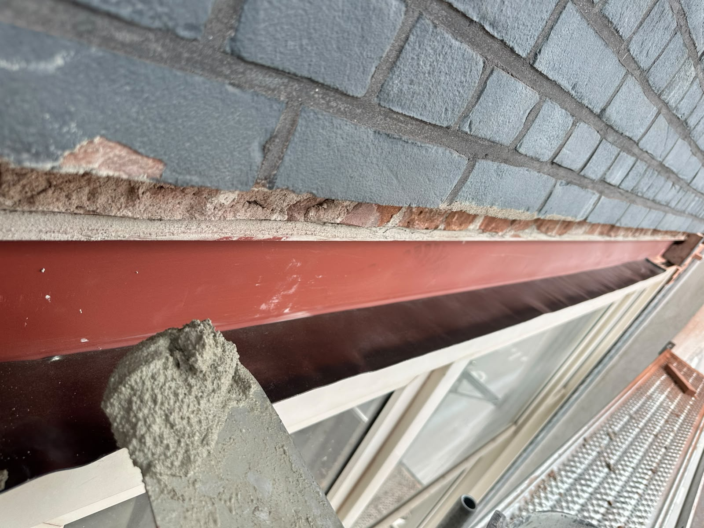
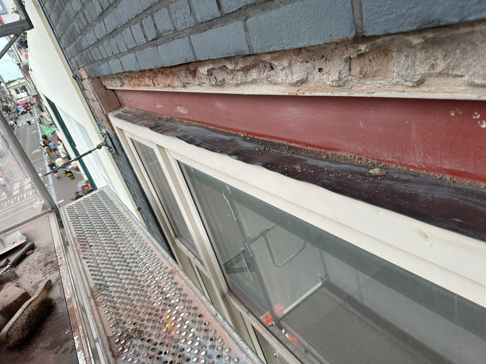
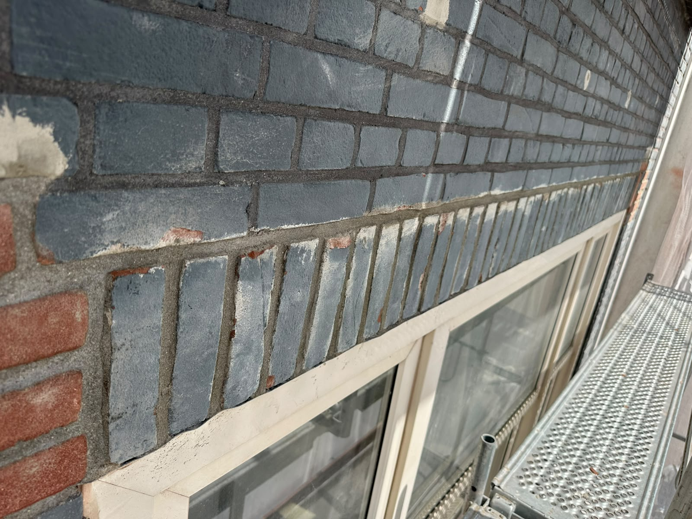
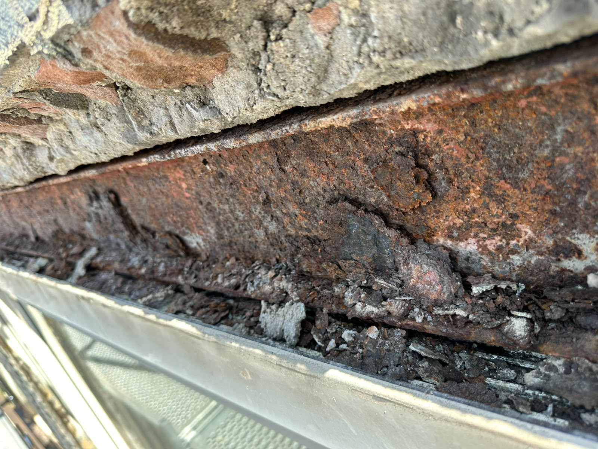
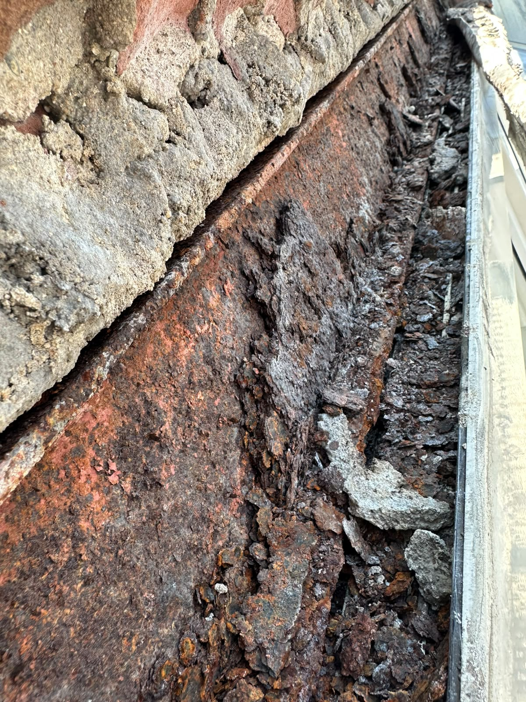
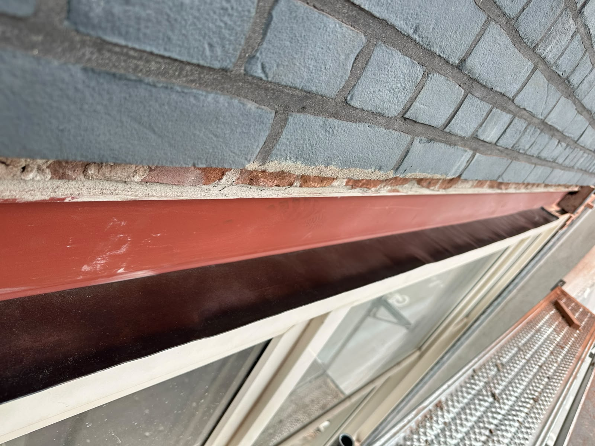
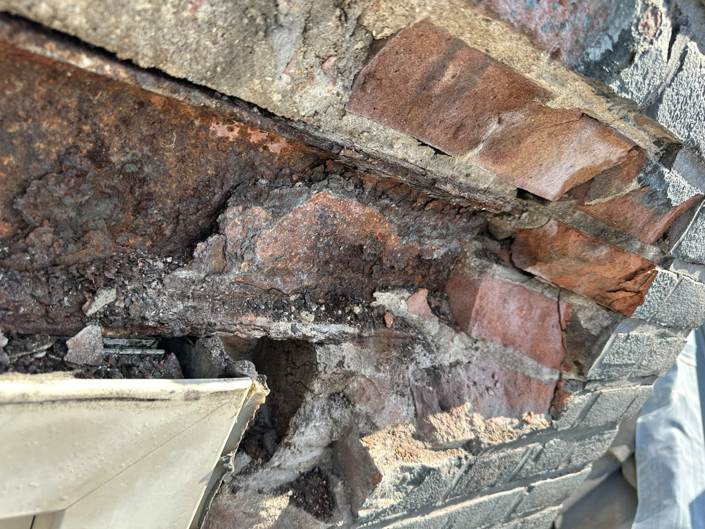

Recente Staalprojecten
Constructieve zekerheid in beeld









Robuuste, op maat gemaakte staalportalen en lateien. De veilige ruggengraat voor complexe doorbraken en renovaties.
Bij structurele wijzigingen aan uw pand, zoals een uitbouw of het doorbreken van een draagmuur, is de veiligheid van levensbelang. Wij leveren en plaatsen hoogwaardige staalconstructies die de integriteit van uw gebouw garanderen.
Constructieve zekerheid in beeld








© 2026 Van der Meer Dienstengroep B.V.